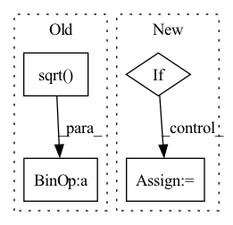

Pattern ID :1798
Before Change
n_units = self.n_units
real, imag = torch.split(input, [n_units // 2, n_units // 2], dim=1)
magnitude = torch.sqrt( real**2 + imag**2)
output_magnitude = magnitude + self.bias
ratio = output_magnitude / (magnitude + self.eps)
ratio = torch.where(output_magnitude >= 0, ratio, torch.zeros_like(magnitude))
real, imag = ratio * real, ratio * imag
output = torch.cat([real, imag], dim=1)After Change
is_complex = torch.is_complex(input)
if not is_complex:
input = torch.view_as_complex(input)
magnitude = torch.abs(input)
angle = torch.angle(input)In pattern: SUPERPATTERN
Frequency: 3
Non-data size: 4
Instances Fragment ID: 6979306
Project Name: tky823/dnn-based_source_separation
Commit Name: 4663266b4fc0a2328bdc62039fb64bdb0beedbf3
Time: 2021-11-17
Author: delta9guitar97@gmail.com
File Name: src/activation.py
M Class Name: ModReLU1d
N Class Name: ModReLU1d
M Method Name: forward(2)
N Method Name: forward(2)
M Parent Class: nn.Module
N Parent Class: nn.Module
M File Name: src/activation.py
N File Name: src/activation.py
M Start Line: 31
M End Line: 39
N Start Line: 45
N End Line: 58
Before Change
src_embedding = src_embedding + src_embedding_p
tgt_embedding = tgt_embedding + tgt_embedding_p
scores = torch.matmul(src_embedding.transpose(2, 1).contiguous(), tgt_embedding) / math.sqrt( self.emb_dims)
scores = torch.softmax(scores, dim=2)
// b x points x points
feat1_corr = torch.matmul(feat2, scores.transpose(2, 1).contiguous())
rotation_ab, translation_ab = self.head(feat1, feat1_corr)After Change
tgt_embedding = tgt_embedding + tgt_embedding_p
rotation_ab, translation_ab = self.head(src_embedding, tgt_embedding, src, tgt)
if self.cycle:
rotation_ba, translation_ba = self.head(tgt_embedding, src_embedding, tgt, src)
else:
rotation_ba = rotation_ab.transpose(2, 1).contiguous() Fragment ID: 6979320
Project Name: paul007pl/mvp_benchmark
Commit Name: cb5622fec6ad947b57a83033563a402533978c61
Time: 2021-07-12
Author: panliang_de2007@qq.com
File Name: registration/models/dcp.py
M Class Name: Model
N Class Name: Model
M Method Name: forward(5)
N Method Name: forward(5)
M Parent Class: nn.Module
N Parent Class: nn.Module
M File Name: registration/models/dcp.py
N File Name: registration/models/dcp.py
M Start Line: 270
M End Line: 294
N Start Line: 394
N End Line: 425
Before Change
Normalized audio tensor with same shape as input
mean = audio.mean(1, keepdim=True).detach()
std = (audio.var(1, keepdim=True).detach() + self.div_guard).sqrt()
return (audio - mean) / std
After Change
Normalized audio tensor with same shape as input
attention_mask: Optional[torch.Tensor] = None
if self.mask_input:
attention_mask = lengths_to_mask(
audio_lengths, max_len=audio.size(-1)
).int()
Fragment ID: 6979299
Project Name: scart97/thunder-speech
Commit Name: 05cbe02b3779b4bafc6dbd1914e490e47893b6da
Time: 2021-11-30
Author: scart.lucas@gmail.com
File Name: src/thunder/wav2vec/transform.py
M Class Name: Wav2Vec2Preprocess
N Class Name: Wav2Vec2Preprocess
M Method Name: forward(3)
N Method Name: forward(2)
M Parent Class: nn.Module
N Parent Class: nn.Module
M File Name: src/thunder/wav2vec/transform.py
N File Name: src/thunder/wav2vec/transform.py
M Start Line: 29
M End Line: 31
N Start Line: 30
N End Line: 49